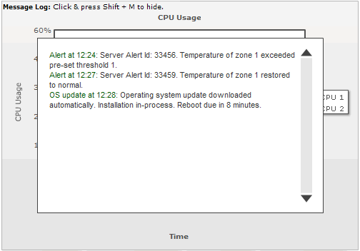

| Real-time data format |
The real-time data is provided by the URL specified as dataStreamURL attribute in the XML/JSON data. This data should essentially be in text format WITHOUT containing any HTML tags or carriage returns. The parameters contained in this output depend on whether you're using data streaming charts or real-time gauges. Here, we'll see the required format for both of them. |
| Real-time data format for data streaming charts |
As we had previously explained, data streaming charts can update themselves in real time and show historical data for the pre-defined period, along with the latest data. Also, each data streaming chart can have multiple datasets, each showing the state of a counter that's being monitored on the chart. As such, the format of the real-time data for data streaming chart depends on a lot of factors like:
Let's quickly see examples of each one of them. |
| Simple Example |
In the simplest form, if you're looking to update say a line chart, which is currently showing two datasets, you need to output the data in following format: &value=23|43 Here, the output is two values - 23 and 43 separated by a | (pipe character). The value 23 will correspond to the first dataset on the chart and the value 43 will correspond to the second dataset. So, when FusionWidgets will read this value, it will update the first dataset by adding 23 as its last value and 43 will be added to the second dataset as its last value. Similarly, if you had 3 datasets on your chart, which you wanted to update via streaming data, the incremental data will be required in the following format: &value=23|43|45
|
| Sending label as part of real time data |
For each data update, you can also send the x-axis label for the data update. Let's consider a case where we're plotting a streaming multi-series line chart indicating the load on three servers. On the x-axis, we've the time and on the y-axis we've the server load. So, in this case we'll need to provide the label for each incremental data too, as the x-axis is represents time. As a result, our incremental data format will be: &label=11:45&value=23|43|45 When FusionWidgets receives this data, it will shift all the existing data and x-axis label on the chart to one position left and then add the new label to the x-axis and data to the three lines present on the chart. |
| Setting label not to display |
Now, let's consider a situation where you do not want to show each label on the chart (to avoid cluttering). Instead, you want to show alternate labels (e.g., time in the above chart), but show the data update every minute. So, in this case, what you can do is configure your server's incremental data update to the following, for the data whose name you don't want to show on the chart. &label=11:45&showLabel=0&value=23|43|45
|
| Passing multiple data in each update |
FusionWidgets charts can accept multiple data in each update too. Say, for an example, you're working over HTTP and you need to make sure that you utilize the bandwidth very efficiently. So, you cannot really set the chart to update itself every second, as that might create a strain on your server. However, you will also not want to skip those data which you missed by not updating every second. In such cases, the multiple data update feature comes in handy. You can then provide the following data update from the server: &label=11:45,11:46,11:47&value=23,25,24|43,47,45|45,47,49 In the above data, we're providing three updates to each of the lines present on the chart. Also, we're providing three new labels for the x-axis. To provide multiple data in a single update, you need to separate the values within the dataset using commas. Each dataset still gets separated from other datasets using the pipe (|) character. |
| Providing link for each incremental data |
FusionWidgets allows you to provide a link for each incremental update data too. The link can be provided in the following structure: &label=11:45&value=23|43|45&link=showdetail.asp?server=1%26time=1145| showdetail.asp?server=2%26time=1145|showdetail.asp?server=3%26time=1145 The link can be in FusionCharts link format (for opening in new window, pop-up window, frames etc.) As you can see above, along with the values for the chart, we're also providing the new links for each of those data - the link has been URL Encoded as it contains special characters like &,% etc. |
| Providing tool text for each incremental data |
When you provide label for the incremental update data, you can also provide the tool text for each data in the following format: &name=11:45&toolText=12/3/2007 11:45:23 AM &value=23|43|45 |
| Providing color for each incremental data |
You can also provide specific color for each data update as under. &label=11:45&value=23|43|45&color=FF0000|0372AB|FF5904 The color specified in real time update will always fill as solid color and not gradient. |
| Providing empty data |
If for some reason, you want to provide empty data to the chart (so that a line/column/area break shows us), you can just set: &label=11:45&value=|| In a line chart if you've not set chart to connect null data (using <chart connectNullData='1' ..>) it will result in something as under: |
| Note the broken lines at the right side of the chart. |
| Adding vLines to chart |
You can add vLines to chart using: &label=11:45&value=753|345&vline=0&vLineLabel=vLine&vLineColor=666666&vLineThickness=2 &vLineDashed=1 It will result in the following output: |
| Sending clear chart command from server |
If at any point of time, you want to clear the historical data being displayed on the chart, you can send the following command from server to do so: &clear=1 This will remove all the existing data on the chart and then start with the new data specified. |
| Stopping real-time updates from server |
If you wish to stop the chart from polling the server for any more real-time updates, you can send the following command from server to do so: &stopUpdate=1 After stopping the update, it can be restarted either using user interaction (right click context menu) or using client-side JavaScript. |
| Sending messages pertinent to Message logger |
| The data streaming charts can show message logger as shown below. There are various parameters which you can specify for message logger. All of them have been explained in the Message Logger section. |
|  |
| Real-time data format for gauges |
The real-time data format for gauges is a bit simpler than that of data streaming charts, as here you do not have the concept of multiple datasets. Just for angular and linear gauge you can have multiple dials/pointers. The format of real-time data for gauges depends on:
Let's quickly see examples of each one of them. |
| Simple Example |
In the simplest form, if you're looking to update the value of a gauge, you need to output the data in following format: &value=34 Here, the output is a single value, 34. So, when FusionWidgets will read this value, it will update the chart by setting its value to 34 (if the data is within range). |
| Updating multiple pointers |
If you've multiple dials defined in angular gauge or multiple pointers defined in linear gauge chart, you can update them all in a single update as shown in the following output from real-time data provider page: &value=34|25|54 Here, we're specifying three values in the real-time update. So, assuming that we've 3 dials or pointers defined in the chart, each one of them will take the sequential value and update itself. That is, the first dial will now show 34, second one will show 25 and the third one 54. The sequence of dial is determined by its order in XML/JSON data. |
| Updating using named ID of the dial/pointer |
In angular gauge & linear gauge, FusionWidgets allows you define the ID for each dial or pointer as under: In angular gauge: <dial id='CPU1Temp' ..../> <dial id='CPU2Temp' ..../> In Linear gauge: <pointer id='CPU1Temp' ...> <pointer id='CPU2Temp' ...> You can now update each of this named dial/pointer as shown in the following output in your real-time data stream: &CPU1Temp=23&CPU2Temp=34 This will change the value of dial 1 (with id as CPU1Temp) to 23 and dial 2 to 34. |
| Stopping real-time updates from server |
If you wish to stop the chart from polling the server for any more real-time updates, you can send the following command from server to do so: &stopUpdate=1 After stopping the update, it can be restarted either using user interaction (right click context menu) or using client-side JavaScript. |
| Sending messages pertinent to Message logger |
| The gauges can show message logger like data streaming charts. There are various parameters which you can specify for message logger. All of them have been explained in the Message Logger section. |